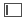

Use the Xcode debugger to inspect your code while running your app. The Debug navigator and debug area automatically appear when you build and run your app. If necessary, show the navigator area by clicking the left button () and the debug area by clicking the middle button ( ) on the right of the toolbar.
) on the right of the toolbar.
To set a breakpoint in your code, open the file in the source editor and click in the gutter next to the line of code you want to break in. To temporarily disable a breakpoint, click the breakpoint badge in the gutter and it will appear faded. To temporarily disable all breakpoints, click the breakpoint icon in the debug bar. To delete a breakpoint, drag it out of the gutter. Run your app, and the debugger stops the app at the breakpoint you specified before that line of code is executed. The Debug navigator appears to the left of the debug area and allows you to navigate the stack when execution stops.

The debug bar appears at the top of the debug area and contains buttons that control the execution of your app—for example, continue, step over, and step in to. The variable area below shows the variables in the current scope. To view a variable, click the disclosure triangle next to it. If the value is an image, you can quick look it directly in Xcode. The console area to the right shows standard output and is where you enter LLDB debugger commands. For example, enter po [expression] and the debugger executes the expression. As you type an expression, the debugger offers suggestions for completing it similar to the source editor.
To manage your breakpoints, click the Breakpoint navigator ( ) in the navigator area. You can view, disable, and delete breakpoints. To add special types of breakpoints, click the Add button (+) at the bottom of the navigator and choose a type of breakpoint from the pop-up menu. Control-click a breakpoint to display a pop-up menu and explore more ways to manage your breakpoints.
) in the navigator area. You can view, disable, and delete breakpoints. To add special types of breakpoints, click the Add button (+) at the bottom of the navigator and choose a type of breakpoint from the pop-up menu. Control-click a breakpoint to display a pop-up menu and explore more ways to manage your breakpoints.
For the user interface, use the view hierarchy debugger to inspect the view hierarchy of your paused app. To optimize performance, monitor your running app using debug gauges.
Next Step: Use source control.